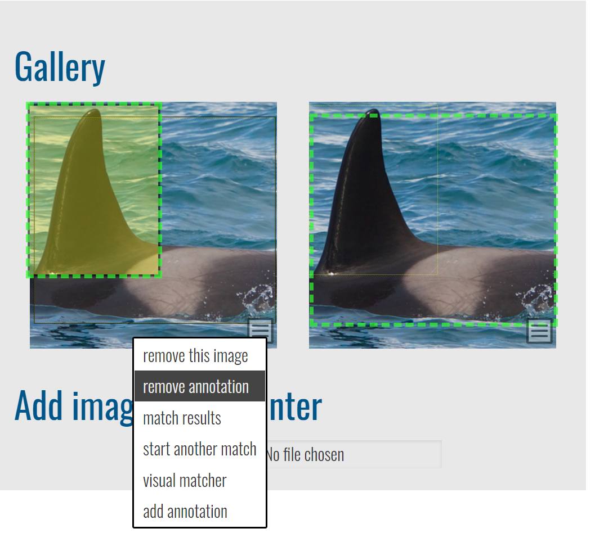
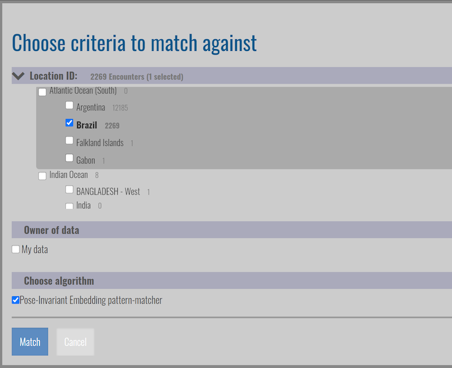

Matching Process#
Wildbook provides several ways to automatically and manually access the Image Analysis Pipeline to identify individual animals, as well as to perform by-eye individual ID. Wildbook assists you in photo ID but never makes a decision for you. You can find answers to frequently asked questions about matching here.
Automated Detection and ID with Encounter submission#
When you Report an Encounter of a single animal, if you set the species to one supported by the Image Analysis Pipeline, Wildbook will automatically perform the following steps:
Send each submitted image to Detection to find one or more Annotations in each photo. In the event that Detection doesn’t find any animal in the photo, you can use Manual Annotation).
Route each Annotation to one or more ID algorithms depending on the type of Annotations returned.
If the location ID (or “study site”) was set, the pipeline will limit candidate matches to only that study site.
Consolidate all Annotation match results into a single page for your review and ID assignment (e.g., setting an existing individual ID or assigning a new ID). See Reviewing Match Results to understand the results page. The Encounter page also allows you to set an individual ID later and you can return to these match results in the future, as well.
Because Detection and Identification reside in a queue of computer vision jobs requested by all users of your Wildbook, you may not immediately see the results of the Image Analysis Pipeline.
If you see green bounding boxes on images in your submitted Encounter, then Detection has completed. You may need to periodically refresh the Encounter page for Annotations to appear.
Click the Match Results button to review potential matches.
See Reviewing Match Results for more information.
Automated Detection and ID with Bulk Import#
After a successful Bulk Import, Detection and Identification can be run allowing for large-scale processing. However, this can also cause delays for other users attempting to use the Image Analysis Pipeline and its job queue.
Manual Annotation with Automated ID#
While Wildbook uses advanced machine learning to find and label animals in images, it may miss an Annotation. Wildbook allows you to draw additional Annotations on an image, label their viewpoints (e.g., “left”, “right”, etc.), and their classes (e.g., “whale_fluke”, “panthera_uncia”, etc.). Once a Manual Annotation has been saved, you can manually start a match.
Removing an Annotation#
To remove an Annotation, click on it and click the Trash icon.
Removing an Annotation from an image will not remove the image from the Encounter it’s on if there are no other Encounters that share the same image.

Manually Starting a Match#
For a matchable Annotation, you can start or re-run matching from the Encounter page by selecting the image and clicking the New Match button.
Choose criteria to match against dialog box appears and allows you to:
select multiple location IDs to match against. The location ID of the Encounter will be selected by default.
filter to only your data.
select one or more algorithms to use for identification.

Click Match to start the matching process.
Reviewing Match Results#
To review the results of the automated matching process, select the image and click the Match Results button. If you recently submitted the Encounter, you may need to wait and then refresh your browser periodically for Wildbook to process the results from automated Detection before the match results load.

Each match result page may show one or more sets of matches, potentially displaying:
one algorithm match for one annotation (e.g., by clicking Start Match on an annotation for which only one ID algorithm is configured).
multiple algorithm matches for one annotation (e.g., by clicking Start Match on an annotation for which multiple ID algorithms are configured).
multiple algorithm matches for multiple annotations (e.g., a new Encounter submission with multiple photos).
The information displayed depends on where in Wildbook the Image Analysis Pipeline was called from and for which species.
Match results page sections#
The following sections make up the matching results page.
Instructions#
Click to expand the Instructions section to get instructions for reviewing matches on the page. Some of those are repeated here:
Click on results to compare match candidates.
Links to the corresponding Encounter and Individual are next to each match score.
Select the correct match by clicking on the correct result and checking the checkbox.
Use the buttons to switch between result types:
Individual Scores: This is the default. It calculates one match score for every Individual in the database. This is the aggregate of each image score for that Individual.
Image Scores: Calculates the match score for every Annotation in the database when compared to the query Annotation.
Adjust the number of results that display in each list by changing the value in Num Results and clicking the Set button.
Results: One ranked set per Annotation per algorithm#
Each block of ranked results represents the top-N matches (default top 12) to an Annotation in descending order. Rank 1 is the top suggested match, and each successive match is presented with relatively less confidence. Click on each row in the list to review the potentially matched Annotations. The Annotation from your Encounter appears on the left, labeled as the TARGET image. Potential candidates for matching appear on the right side, labeled to match their position in the list.
Rank: The position in the listing (1,2,3,4, etc.).
Match score: The match score represents the numeric value returned from the algorithm. These scores are not standardized between algorithms or platforms and are generally not bounded. For more information about interpreting algorithm scores, see Identification.
Encounter link: Opens a new tab to the potential match encounter.
Inspect: Opens a new page focused on the features being matched. Areas that are highlighted display potentially matched features. Not every algorithm will provide additional detail. Only the first 12 matches may have additional detail.
Checkbox: Select the checkbox to indicate that an encounter is a match with the target Annotation.
Setting the ID using the checkbox#
In addition to setting the Individual ID from the Encounter page, you can set the ID directly from the match results using the checkbox on any listed result. By clicking the checkbox, one of the following results will be suggested:
If the Annotation is on an encounter for which the ID has not yet been set and the candidate Annotation does not have an ID, selecting the checkbox will display a new option in the upper right that includes:
a field that allows you to enter a new ID to assign to multiple encounters or to look up an existing ID to assign to the encounters.
The button Set individual on all encounters that allows you to set the ID from the form field. The selected Annotations and their respective encounters now belong to the same marked individual.
If the Annotation is on an encounter for which the ID has not yet been set and the candidate Annotation has an ID set, selecting the checkbox will display a new button in the upper right Set to individual. Click the button to assign the suggested individual ID to the Annotation and its Encounter. The Annotations and their respective encounters now belong to the same marked individual.
If the Annotation is on an encounter for which the ID has been set and the candidate Annotation has a different ID set, selecting the checkbox will display Merge individuals. Click Merge individuals to merge the two Marked Individuals into a single record, assigning all encounters from both previously individuals to a single individual. If more than one Marked Individual is selected from the list of matches, You cannot merge more than 2 individuals here will display.
Visual Matcher#
Visual Matcher is a separate, very limited user interface to support visual matching of encounters without computer vision. To access the Visual Matcher, click the Visual Matcher button after selecting your image. Visual Matcher was largely developed to support giant manta matching before the availability of computer vision. It has very limited value outside of that task and MantaMatcher.
Spot Mapping#
For certain species in Sharkbook, the match process begins with spot mapping instead of an automated detection.
Spot mapping is available in Sharkbook, Spotting Giant Sea Bass, Spot-a-Shark USA, and MantaMatcher. Spot mapping allows only one left side pattern and one right side pattern per Encounter.
From the Encounter image gallery, click on the menu icon of the image and select spot mapping. From here, you’ll set your spot mapping region.
To create your region, use the the rotation icons to align the top blue line of the box with the dorsal fins. Grab anywhere else on the box to resize. Once you’ve set your region, toggle the radio buttons to set the anchor points for where the fins meet the body and map the spots. If you misplace a spot, click it again to remove it. The minimum number of spots you should add, not including the markers for the fins, is 3-5. Save your spot data when you’re finished.
For whale sharks, click the return to encounter button. From the image menu of your new spot mapped region, follow the steps in Manually Starting a Match. Note that while you can run a scan task on whale sharks using the steps below, it produces less accurate results.
For grey nurse sharks and broadnose sevengill sharks, click the start ScanTask button. Click the Go to sharkGrid administration to monitor for completion link. My Pending scanTasks will display the spot map you just worked on. When it’s ready, your completed tasks will appear in My Completed scanTasks.
Each scan will show the results of two algorithms: Modified Groth and I3s. The match score for Modified Groth means that the higher the score, the more likely the match is a correct one. For I3s, it’s the opposite: the higher the score, the less likely the match is a correct one.
If you’ve found a match, go back to your Encounter and edit the Identity section to add to an existing Marked Individual or create a new one. Select matched by Pattern match.
Next, set the workflow state in the Metadata section to approved.
In addition to match candidates based on spot mapping placement, you may also be shown Nearby Matches. If a match is made between two locations for a given species, those locations are used for Nearby Matches in all future match sets.
If you want to create an association between two locations that don’t already appear as Nearby Matches for each other, upload two encounters from each location for a Marked Individual and match them right away.
Delete a Spot Map#
From the Encounter page, scroll down to the Spot Matching Algorithms section and click on the Remove spots link beneath the side you want the spots removed.
Delete a Scan Task#
On the Grid Administration page, click the Delete button in the Actions column of the scanTask table.